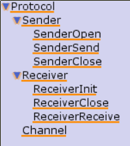
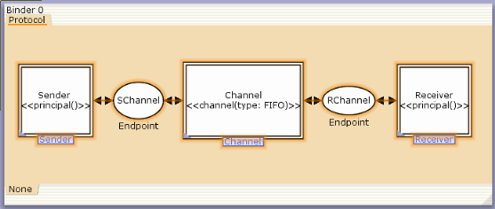

PetriCode examples -- Simple Frameing Protocol (SFP): The model
The CPN model for the Simple Frameing Protocol is available for download here. It is best viewed and edited with CPN Tools. Here follows a brief description of some of the key elements of the model.
The model for the Simple Frameing Protocol, as all PetriCode models, is herarchical with three distinct layers. The top layer (Protocol) is the Protocol Layer which defines the principal agents and the channels between them. The second layer, which includes the pages Sender and Recevier is the protocol layer where the interface and lifecyle of each of the principle agents is defined. The final layer is the service layer where the life-cycle of each of the services are deifined.
The Protocol Layer
The protocol level consits of the two principal agents of the SFP: The Sender and the Reciever. In additions there is, a channel between the two princiapals. The two princiapals are represented by substitution transitions annotated with <<principal()>> wich indicates to the generator that the referenced pages are indeed principals agents of the protocol.
